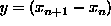
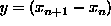

The essential feature of this algorithm for solving
, is that given a guess for the solution, say  ,
we get an update using the rule
,
we get an update using the rule
Try as an example to use it to find the value of x such that
 .
.
That is  and , so that the
update is
and , so that the
update is
Start of with a guess, say then

which can be further iterated, for example,  ,
.
,
.
The real answer is of course , so we essentially get there after just 5 iterations.
Where does Newton-Raphson come from? Either a picture, or as a first order Taylor Series approximation. First order Taylor series approximations are often referred to as a linearization of the problem.
The matrix version for the Newton-Raphson comes from thinking about approximating the function using a hyper-plane, and gives an update

where x and g are now vectors and therefore g' is a square symmetric matrix.
Matrix inversion should be avoided wherever possible, so we re-express the update by multiplying through by g' to get

Note that this is now a linear system of equations of the form,
where A is a  matrix,  is a
p-vector as is
matrix,  is a
p-vector as is  .
.
If we can solve this equation for y then clearly .
This is how we will really do it, and we can use the Q-R decompostion to solve this system of linear equations.